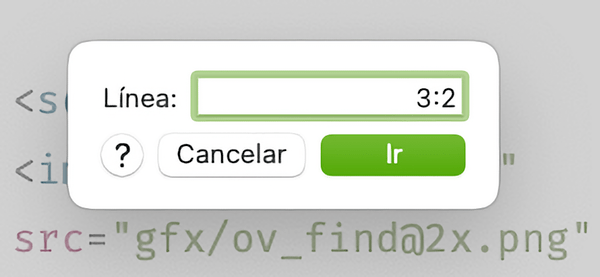

El comando "Ir a la línea..." le permite seleccionar y saltar a una línea específica rápidamente.

Elija Ir a la línea... en el menú Buscar
Introduzca el número de línea donde saltar en el cuadro de diálogo.
Pulsa en Ir, o teclea Return.
También puedes especificar un rango de líneas.
Si escribes “3”:
→ Se seleccionará la línea 3 (la tercera línea desde la parte superior).
Si escribes "3:2":
→ Lo que esto indica es "empezar desde la línea 3, seleccionar 2 líneas". Por lo tanto, se seleccionarán las líneas 3 y 4.
Si escribes "3:-1”:
→ Lo que esto indica es "empezando desde la línea 3, seleccione las líneas restantes excepto la última línea". Por lo tanto, si el documento tiene 10 líneas, se seleccionarán las líneas de la línea 3 a la 9.